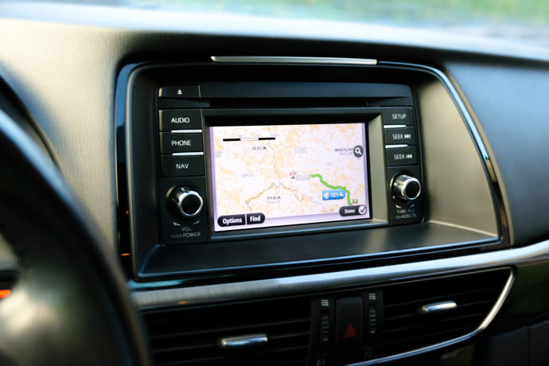

Sé parte de nuestra familia tecnologica
La tecnologia nos da las facilidades que disminuyen las barreras del tiempo y la distancia!!!
Beneficio 1
Acceso rapido a la información.
Beneficio 2
Mejoras en el área de la medicina.
Beneficio 3
Mejoras en la seguridad.
La tecnología avanza demasiado rapido!!!
Con el avance de la tecnología llegan también nuevos retos para la sociedad. Y la innovación permite crear soluciones satisfactorias y en muchos casos, masivas. Los servicios educativos a distancia o la robótica aplicada a la salud son ejemplo de ello.!
Evoluciòn Tecnologìca
Ordenadores Personales
La forma en la que los ordenadores personales cambiaron nuestras vidas es más que obvia. Se acabaron los papeles como forma de documento: los ordenadores creaban documentos virtuales, mucho más sencillos de compartir. Ya no necesitábamos numerosas herramientas para desempeñar distintos trabajos: ahora todo se aglutinaba en un solo lugar.
Evoluciòn Tecnologìca
Telèfonos Mòviles
Este es otro de los aparatos que cambió nuestra forma de vida. Con el abaratamiento de los teléfonos móviles, encontramos una nueva manera de comunicarnos entre nosotros. Ya no hacía falta estar en un domicilio, bar o cabina telefónica para hacer una llamada telefónica o enviar un mensaje.
Evoluciòn Tecnologìca

GPS
Aquellos que hayáis viajado antes de los GPS, sabréis lo tedioso y complicado que era. La lectura de mapas era esencial, y el papel del copiloto era realmente importante a la hora de hacer un viaje largo. Con la llegada de los primeros modelos de GPS, las travesías por carretera que no nos son familiares son mucho más sencillas.
Evoluciòn Tecnologìca
Game Boy
Fue una de las primeras consolas portátiles del mundo, y la primera en ser tan ampliamente aceptada. Tanto la Game Boy original como Game Boy Color (su revisión con colores) fueron muy bien acogidas por los usuarios, y supusieron el afianzamiento del mercado portátil.
Evoluciòn Tecnologìca
Lector de Huellas Digitales
Seguridad Informática con lector de huella digital. El acceso a tus sistemas informáticos puede ser controlado mediante las características biométricas de sus usuarios. Lectores de huella dactilar para PC, mouse con sensor de huella digital, lector de huella digital + tarjeta plástica, etc. Máxima seguridad en el PC y facilidad de acceso con sensores de huella dactilar. ¡Y olvídate de contraseñas!
Evoluciòn Tecnologìca
PLAYSTATION
videojuegos creadas y desarrolladas por Sony Interactive Entertainment. Han estado presentes en la quinta, sexta, séptima y octava generación de videoconsolas, la compañía promotora está actualmente en el mercado con su PlayStation 4.
EXPERT IN SOLUTIONS
Que algo no haya salido como hayas querido no significa que sea inútil.!